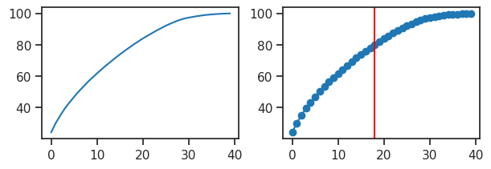

(19) MNIST — rsample + MEI — 1#
Motivation: Poisson VAE, reparameterization. MEI (excite) and MII (inhibit) on latents. No interpretable structure, but some structure. Device = cuda:1
# HIDE CODE
import os, sys
from IPython.display import display
# tmp & extras dir
git_dir = os.path.join(os.environ['HOME'], 'Dropbox/git')
extras_dir = os.path.join(git_dir, 'jb-vae/_extras')
fig_base_dir = os.path.join(git_dir, 'jb-vae/figs')
tmp_dir = os.path.join(git_dir, 'jb-vae/tmp')
# GitHub
sys.path.insert(0, os.path.join(git_dir, '_PoissonVAE'))
from figures.fighelper import *
# warnings, tqdm, & style
warnings.filterwarnings('ignore', category=DeprecationWarning)
from rich.jupyter import print
%matplotlib inline
set_style()
Import \(/\) prep#
from _tmp.gapvae import prepare_stuff, iteration, validate
from _tmp.plotters import plot_latent_space, plot_latent_scatter
n_latents = 40
weight_norm = True
batch_size = 300
epochs = 1200
pvae, optim, optim_schedule, trn, vld, device, kws_iter = prepare_stuff(
model='pois',
device_idx=1,
n_latents=n_latents,
weight_norm=weight_norm,
max_grad_norm=500,
batch_size=batch_size,
epochs=epochs,
lr=1e-3,
beta=1.0,
)
+-------------+------------+ | Module Name | Num Params | +-------------+------------+ | PoissonVAE | 7.8 Mil | | --- | --- | | enc | 6.6 Mil | | fc_enc | 1.3 K | | dec | 1.2 Mil | | fc_dec | 42.0 K | +-------------+------------+
fig, axes = create_figure(1, 4, (9.5, 1.7), width_ratios=[1, 1, 1.5, 1.5], layout='constrained')
sns.histplot(to_np(pvae.log_rates).ravel(), ax=axes[0])
sns.histplot(to_np(pvae.log_rates.exp()).ravel(), ax=axes[1])
axes[2].plot(kws_iter['temperatures'])
axes[3].plot(kws_iter['beta_values'])
_t = kws_iter['temperatures'].min()
axes[2].axhline(_t, color='r', ls='--', label=f't_min = {_t:0.3f}')
axes[2].legend()
plt.show()
Train / Validate#
trn#
%%time
pbar = tqdm(range(epochs), ncols=130, position=0)
nelbo, grads = np.zeros(epochs), np.zeros(epochs)
for ep in pbar:
grad, tot, recon, kl = iteration(
ep, pvae, trn, optim, optim_schedule, device, **kws_iter)
nelbo[ep], grads[ep] = recon + 1.0 * kl, grad
msg = ', '.join([
f"grad = {grad:0.1f}",
f"loss = (kl: {kl:0.1f}, recon: {recon:0.1f} —— tot: {tot:0.2f}) ",
])
pbar.set_description(msg)
grad = 98.1, loss = (kl: 10.6, recon: 20.1 —— tot: 30.76) : 100%|███████████████████████| 1200/1200 [3:28:05<00:00, 10.40s/it]
CPU times: user 5h 21min 44s, sys: 4min 5s, total: 5h 25min 50s
Wall time: 3h 28min 5s
vld#
emb, labels, loss_vld = validate(pvae, vld, device)
loss_vld
{'kl': 10.734614640778187,
'recon': 20.419113841337314,
'tot': 31.15372838637408}
fig, axes = create_figure(1, 3, (11, 2.4), layout='tight')
axes[0].plot(nelbo, color='k', label='nelbo loss (train, avg)')
axes[0].axhline(loss_vld['tot'], color='tomato', ls='--', label=f"validation loss: {loss_vld['tot']:0.2f}")
axes[0].legend()
for ax in axes[1:].flat:
ax.plot(grads, label='grads (avg)')
ax.axhline(kws_iter['max_grad_norm'], color='k', ls='--', label=f"grad clip: {kws_iter['max_grad_norm']}")
ax.legend()
for i in range(2):
axes[i].set_yscale('log')
# axes[0].set_ylim(top=50)
plt.show()
pvae.temp = 0.0
spks, r_q, r_qp = [], [], []
for x, _ in iter(vld):
with torch.inference_mode():
out = pvae(x.to(device))
spks.append(to_np(out['spks']))
r_q.append(to_np(out['log_dr'].exp()))
r_qp.append(to_np(torch.exp(out['log_r'] + out['log_dr'])))
spks, r_q, r_qp = cat_map([spks, r_q, r_qp])
spks = spks.astype(int)
np.quantile(spks.ravel(), 0.99)
6.0
fig, axes = create_figure(1, 2, (9, 2.2), layout='constrained')
nbins = 7
sns.histplot(spks.ravel(), color='k', stat='percent', bins=np.linspace(0, nbins, nbins+1) - 0.5, ax=axes[0])
nbins = 10
sns.histplot(spks.ravel(), color='k', stat='percent', bins=np.linspace(0, nbins, nbins+1) - 0.5, ax=axes[1])
axes[0].locator_params(axis='y', nbins=10)
axes[1].set_xscale('log')
axes[1].set_yscale('log')
axes[0].grid()
plt.show()
fig, axes = create_figure(1, 2, (8, 2.8), layout='constrained')
x2p = to_np(r_q).ravel()
for i, ax in enumerate(axes.flat):
# dr
sns.histplot(x2p if i == 0 else np.log(x2p), stat='percent', ax=ax)
# log dr
lbl = r"$\delta r \approx 1$" if i == 0 else r"$\log \delta r \approx 0$"
lbl = 'no ff mod: ' + lbl
ax.axvline(1.0 if i == 0 else 0.0, color='r', ls='--', lw=1.2, label=lbl)
xlbl = r"$\delta r$" if i == 0 else r"$\log \delta r$"
ax.set_xlabel(xlbl)
ax.set_yscale('log')
ax.legend()
plt.show()
fig, axes = create_figure(2, 2, (8, 4.5), layout='constrained')
nbins = 10
_kws = dict(
legend=False,
stat='percent',
bins=np.linspace(0, nbins, nbins+1) - 0.5,
color='k',
)
sns.histplot(spks.ravel(), ax=axes[0, 0], **_kws)
# axes[0, 0].locator_params(axis='x', nbins=nbins+2)
_kws = dict(
kde=True,
legend=False,
stat='percent',
line_kws={'lw': 2},
alpha=0.2,
)
sns.histplot(r_q.ravel(), ax=axes[1, 0], **_kws)
sns.histplot(np.log(r_qp.ravel()), ax=axes[0, 1], **_kws)
_kws.update(dict(kde=False, alpha=1.0, color='g', bins=np.linspace(0, 4, 41) - 0.05))
sns.histplot(to_np(pvae.log_rates.exp()).ravel(), ax=axes[1, 1], **_kws)
axes[0, 0].set_title('Spike counts')
axes[0, 1].set_title(r'$r \delta r$' + ' (posterior)')
axes[1, 0].set_title(r'$\delta r$' + ' (encoder output)')
axes[1, 1].set_title(r'$r$' + ' (from prior)')
# axes[1, 0].set_ylim(top=350)
for ax in axes[:, 1]:
ax.set_ylabel('')
add_grid(axes)
plt.show()
from torchvision.utils import make_grid
t = 0.0
x_samples = pvae.sample(100, t)
grid_images = make_grid(x_samples, nrow=10, normalize=True, value_range=(0, 1))
grid_images.shape
torch.Size([3, 302, 302])
x2p = to_np(grid_images)
x2p = np.transpose(x2p, (1, 2, 0))
fig, ax = create_figure(1, 1, (5, 5))
ax.imshow(x2p)
remove_ticks(ax)
plt.show()
plt.imshow(to_np(x_samples[16].squeeze()));
x, _ = next(iter(vld))
x = x.to(device)
with torch.inference_mode():
out = pvae(x)
num = 32
grid_images = make_grid(
torch.cat([x[:num], out['x_recon'][:num]]),
nrow=num,
normalize=True,
value_range=(0, 1),
)
x2p = to_np(grid_images)
x2p = np.transpose(x2p, (1, 2, 0))
fig, ax = create_figure(1, 1, (13, 5))
ax.imshow(x2p)
remove_ticks(ax)
plt.show()
plt.imshow(to_np(out['x_recon'].squeeze()[7]));
_ = plot_latent_scatter(emb, labels, (0, 2), (6, 6), 10)
uu, ss, vv = sp_lin.svd(emb, full_matrices=False)
ss *= 100 / sum(ss)
ss.shape
(40,)
fig, axes = create_figure(1, 2, (6, 2), layout='constrained')
axes[0].plot(np.cumsum(ss))
axes[1].plot(np.cumsum(ss)[:40], marker='o')
axes[1].axvline(18, color='r')
plt.show()
#, marker='o');

Variability in dr#
dr = []
labels = []
for x, y in iter(vld):
with torch.inference_mode():
out = pvae(x.to(device))
dr.append(to_np(out['log_dr'].exp()))
labels.append(to_np(y))
dr, labels = cat_map([dr, labels])
dr.shape, labels.shape
((10000, 40), (10000,))
means, vars = dr.mean(0), dr.var(0)
fig, axes = create_figure(1, 2, (10, 2), layout='constrained')
sns.histplot(means, label='means of dr', bins=np.linspace(0.8, 1.3, 51) - 0.005, ax=axes[0])
sns.histplot(vars, label='vars of dr', bins=np.linspace(0.0, 1.3, 66) - 0.01, ax=axes[1])
axes[1].set_ylabel('')
plt.show()
sns.regplot(x=vars, y=means);
latent_i = np.argmax(vars)
latent_i, means[latent_i], vars[latent_i]
(9, 1.1426173, 1.1461551)
sns.histplot(dr[:, latent_i]);
intvl = range(1000, 3000)
fig, ax = create_figure(1, 1, (10, 2))
ax.plot(spks[intvl, latent_i])
plt.show()
MEI#
rng = get_rng()
def compute_mei(model, idx, start, excite=True, alpha=0.1, nsteps=100, scalefunc=lambda x: 1, eps=1e-3, name=''):
"""
Find an MEI for a given model and neuron ids.
-model: a pytorch model
-cids: a list of neuron ids
-start: the initial input
-alpha: the learning rate
-nsteps: the number of steps to run
-scalefunc: scales the learning rate as a func of step
-eps: the convergence threshold
-name: name for printing
"""
x = start.clone()
assert len(x) == 1
pbar = tqdm(range(nsteps))
for i in pbar:
model.zero_grad()
x_copy = x.clone()
# Get the current prediction
out = model(x)
log_dr = out['log_dr'][0, idx]
if excite:
y = log_dr
else:
y = log_dr.mul(-1)
# Get the gradient of output with respect to input
g = torch.autograd.grad(y, x, retain_graph=True)[0]
g_norm = torch.norm(g)
if g is None or g_norm == 0:
print("No gradient at step", i)
return None
# Update tqdm description
msg = f"idx = {idx} ——— ||g|| = {g_norm:0.5f}"
pbar.set_description(msg)
# Update the input
x = x_copy + scalefunc(i) * alpha * g
# Terminate if converged
if torch.abs(x - x_copy).max() < eps:
print(name, "converged at step", i)
break
return x
start = rng.normal(size=(1, 1, 28, 28))
start = torch.nn.Parameter(
data=torch.tensor(start).float(),
requires_grad=True,
)
start = start.to(device)
plt.imshow(to_np(start.squeeze()), cmap='Greys_r')
plt.colorbar();
%%time
mei = compute_mei(
model=pvae,
idx=latent_i,
start=start,
excite=True,
nsteps=10000,
alpha=0.1,
)
||g|| = 1.69394: 100%|████████████████████| 10000/10000 [03:03<00:00, 54.43it/s]
CPU times: user 3min 4s, sys: 1.07 s, total: 3min 5s
Wall time: 3min 3s
plt.imshow(to_np(mei.squeeze()), cmap='Greys_r')
plt.colorbar();
%%time
mii = compute_mei(
model=pvae,
idx=latent_i,
start=start,
excite=False,
nsteps=10000,
alpha=0.1,
)
||g|| = 2.87492: 100%|████████████████████| 10000/10000 [03:04<00:00, 54.34it/s]
CPU times: user 3min 4s, sys: 1.22 s, total: 3min 6s
Wall time: 3min 4s
plt.imshow(to_np(mii.squeeze()), cmap='Greys_r')
plt.colorbar();
%%time
mei_all = []
mii_all = []
kws = dict(
model=pvae,
idx=idx,
start=start,
nsteps=20000,
alpha=0.1,
)
for idx in range(n_latents):
mei = compute_mei(excite=True, **kws)
mii = compute_mei(excite=False, **kws)
mei_all.append(mei)
mii_all.append(mii)
fig, axes = create_figure(1, 2, (3.7, 2), 'all', 'all', layout='constrained')
axes[0].imshow(to_np(mei.squeeze()), cmap='Greys_r')
axes[1].imshow(to_np(mii.squeeze()), cmap='Greys_r')
axes[0].set_title(f'latent #{idx} (MEI)')
axes[1].set_title(f'latent #{idx} (MII)')
remove_ticks(axes)
plt.show()
||g|| = 0.05913: 9%|█▉ | 1860/20000 [00:32<05:30, 54.82it/s]
converged at step 1863
||g|| = 0.05913: 9%|█▉ | 1863/20000 [00:32<05:19, 56.73it/s]
||g|| = 1.41800: 100%|████████████████████| 20000/20000 [05:58<00:00, 55.72it/s]
||g|| = 3.51719: 100%|████████████████████| 20000/20000 [06:05<00:00, 54.68it/s]
||g|| = 1.33163: 100%|████████████████████| 20000/20000 [06:02<00:00, 55.10it/s]
||g|| = 0.84509: 100%|████████████████████| 20000/20000 [06:05<00:00, 54.76it/s]

||g|| = 0.36869: 100%|████████████████████| 20000/20000 [06:09<00:00, 54.07it/s]
||g|| = 1.07192: 1%|▎ | 269/20000 [00:05<06:33, 50.17it/s]
mei_all = torch.cat(mei_all).squeeze()
mii_all = torch.cat(mii_all).squeeze()
mei_all.shape, mii_all.shape
(torch.Size([40, 28, 28]), torch.Size([40, 28, 28]))
fig, axes = create_figure(2, n_latents, (2 * n_latents, 4.3), 'all', 'all', layout='constrained')
for i in range(n_latents):
axes[0, i].set_title(f'latent #{i}')
axes[0, i].imshow(to_np(mei_all[i]), cmap='Greys_r')
axes[1, i].imshow(to_np(mii_all[i]), cmap='Greys_r')
axes[0, 0].set_ylabel('MEI')
axes[1, 0].set_ylabel('MII')
plt.show()